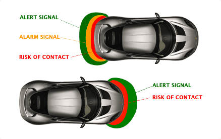
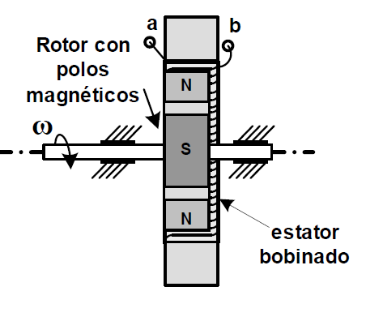
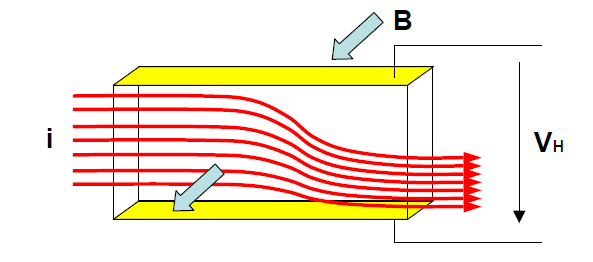

Los sensores electromagnéticos están
basados en la variación de un campo magnético o de un campo eléctrico sin
modificar la inductancia o la capacidad.
Se pueden clasificar en:
- Sensores basados en la ley de Faraday
Su funcionamiento está basado en el mismo
principio físico que los generadores de
corriente alterna. Los más utilizados están
constituidos por un rotor de imanes
permanentes y una bobina de N espiras en el
estator.
- Sensores basados en el efecto Hall
Si un conductor o un semiconductor a través del cual circula una corriente se somete
a un campo magnético perpendicular a la misma, se genera una tensión o diferencia
de potencial VH (tensión de Hall) transversal, cuyo sentido se invierte al hacerlo el
sentido del campo magnético o el de la corriente.



Se instalan de 2-4 sensores para generar un campo electromagnético que detecta objectos que entren en el radio del campo.
Ventajas :
- Su instalación suele ser bastante discreta
- No suelen tener ángulos muertos
Desventajas :
- No avisan el lado por el que se acerca el obstáculo
- El agua, en exceso , puede afectar a la correcta detección